Android Recipes App
Android Recipes App is a recipe cookbook mobile application for Android platform that is ready to use on both phones and tablets. Just fill your recipes, choose one of the many color themes and you are ready to publish your application in Google Play. The application is fully native, using latest features of Android platform to provide the best user experience. The recipes are bundled with the application and can be used without internet connection. The application is specially optimized to be extremely easy to configure and detailed documentation is provided.
Requirements
- Windows XP (32-bit), Vista (32- or 64-bit), or Windows 7 (32- or 64-bit)
- Mac OS X 10.5.8 or later (x86 only)
- Linux (tested on Ubuntu Linux, Lucid Lynx)
- GNU C Library (glibc) 2.7 or later is required.
- On Ubuntu Linux, version 8.04 or later is required.
- 64-bit distributions must be capable of running 32-bit applications.
- Latest ADT Bundle
Getting started
Thank you for buying Android Recipes App. To try the template you need to follow a few simple steps:
If you are upgrading from previous version, check the upgrading guide.
Import projects in ADT Bundle
The application is configured to be build with latest ADT Bundle, so you need to install it before proceeding.
- Launch ADT Bundle.
- Select from the menu
File->Import->General->Existing Projects into Workspace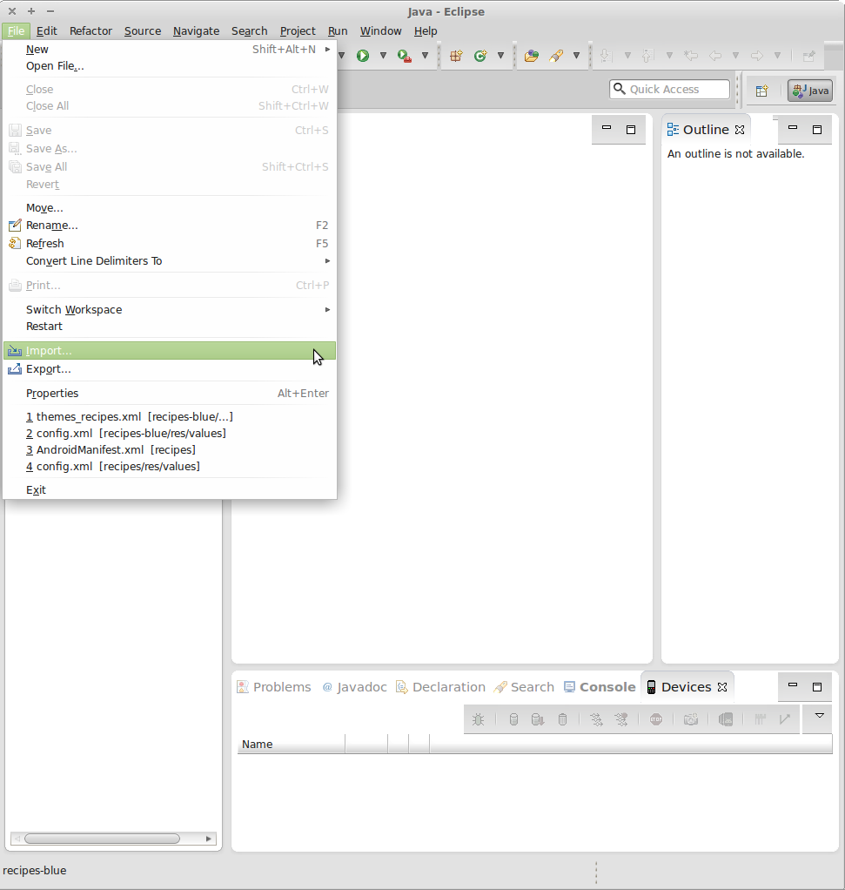 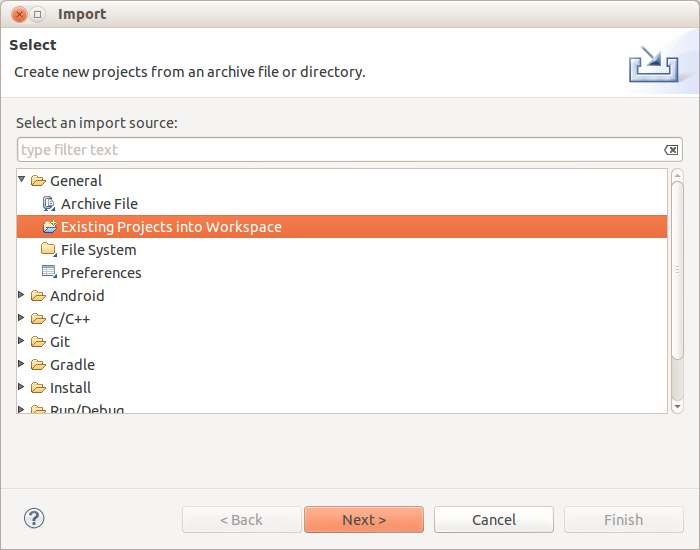 - Browse to the location where you extracted the Android Recipes App
- Beside the Projects: list press
Select All - Press
Finish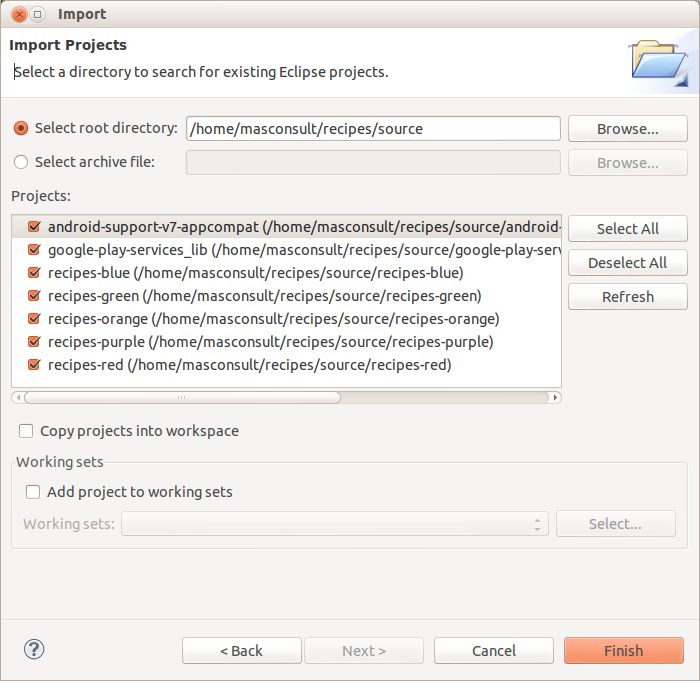 - You should wait until ADT Bundle builds the projects and then you can run any of
recipes-*projects to explore the different themes.
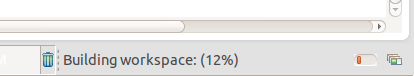
Note: If you get errors, try by cleaning all projects:
- from the menu
Projects->Clean - select all projects and press
OK.
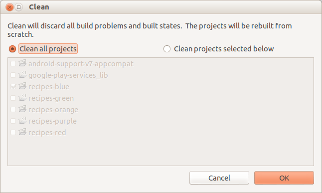
Run Android recipes app on a device or on Android emulator
Bellow are described the steps for running the application on Android emulator or on real device
- Right click on the project you want to run
Run As->1 Android Application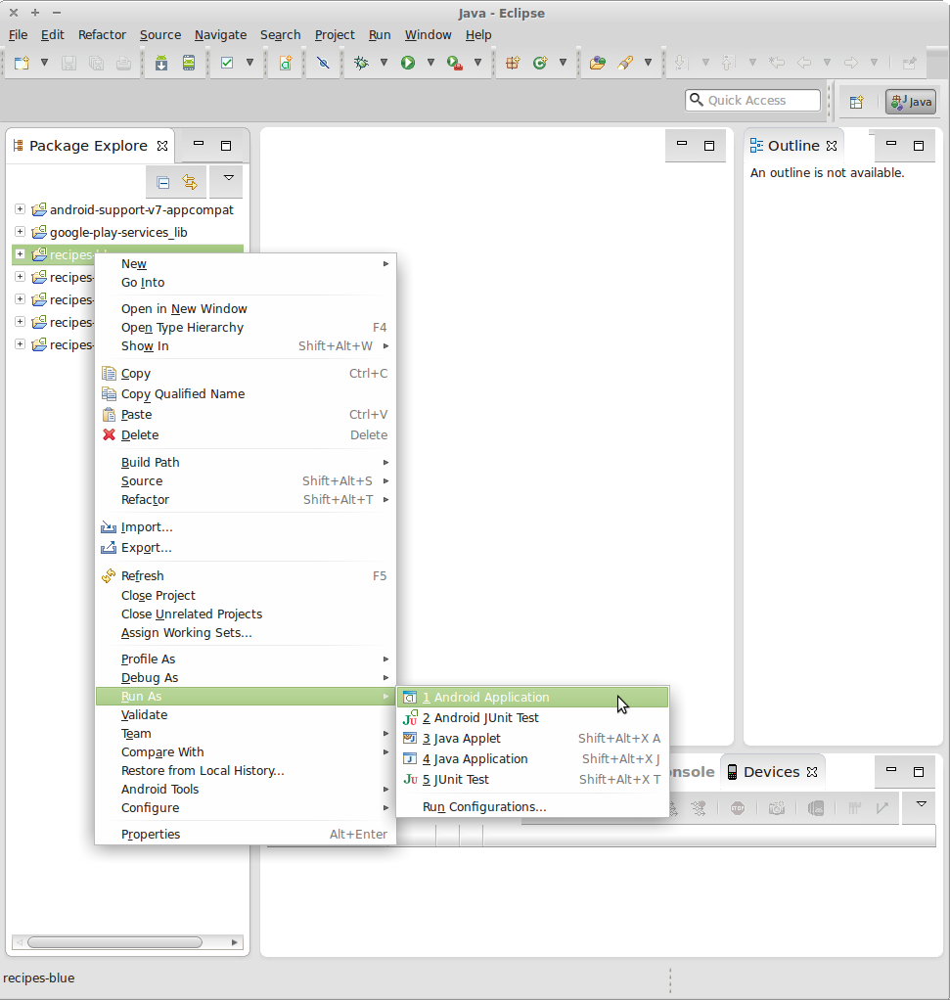 - Choose on what device or emulator to run the app.(If you haven't connected any devices or started any emulator, ADT Bundle will try to start most appropriate Android emulator and run the application on it). 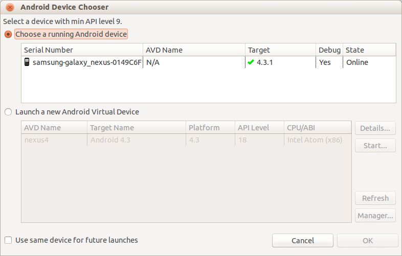
Customization
In the following lines I'll describe how to customize Android Recipes App to match your brand and needs.
After you buy Android Recipes App you need to:
- Import projects in ADT Bundle
- Choose your color theme
- Add some data(Build json file with recipes and add recipes images)
- Choose what indices to display in list and detailed page
- Change Launcher icon
- Change Splash screen icon
- Change Application name
- Set up notifications
- Set up Ads
- Set up Google Analytics
- Translate in different language
Note: You need to run the project after making changes, to see them in the application!
Choose your color theme
We provide Android Recipes App with 5 different color themes separated in 5 android projects. You should choose one of these themes and make all the configurations and customizations in the project representing the color you have choosen. If you wish to see how the colors look like in the app you can run any one of theme projects on a Device or on a Emulator
Red theme
Project name: recipes-red
| Splash | List |
|---|---|
| 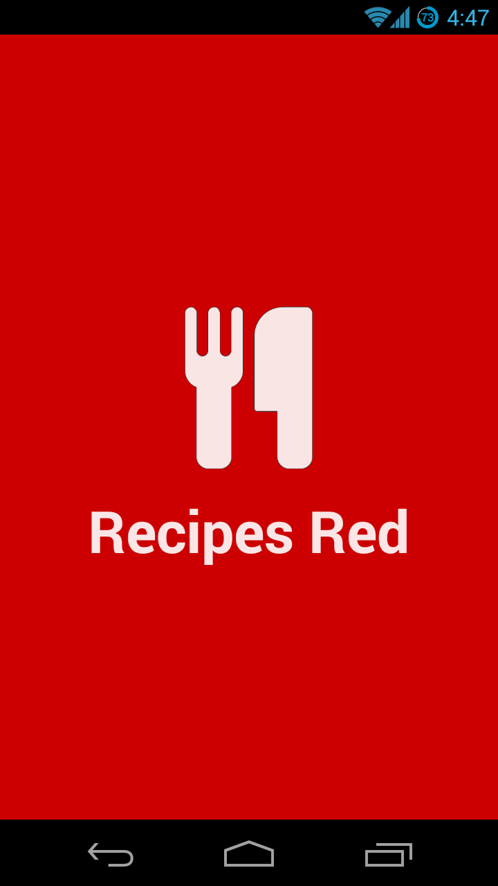 | 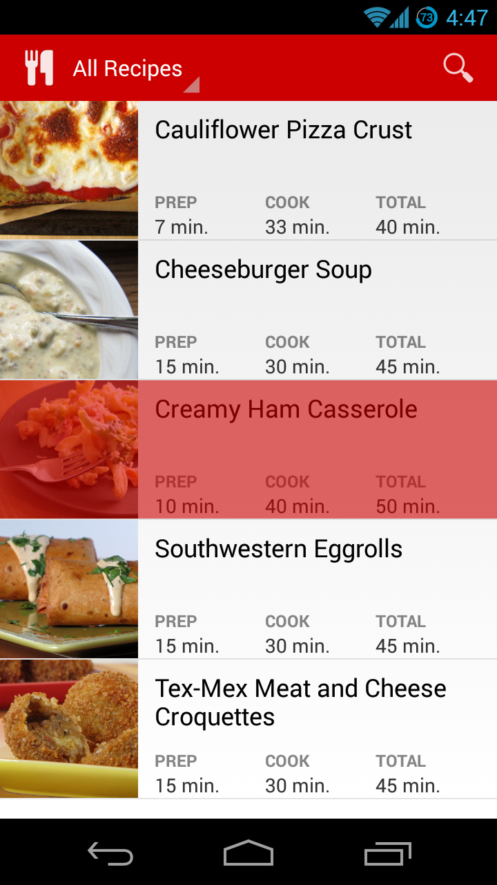 |
Green theme
Project name: recipes-green
| Splash | List |
|---|---|
| 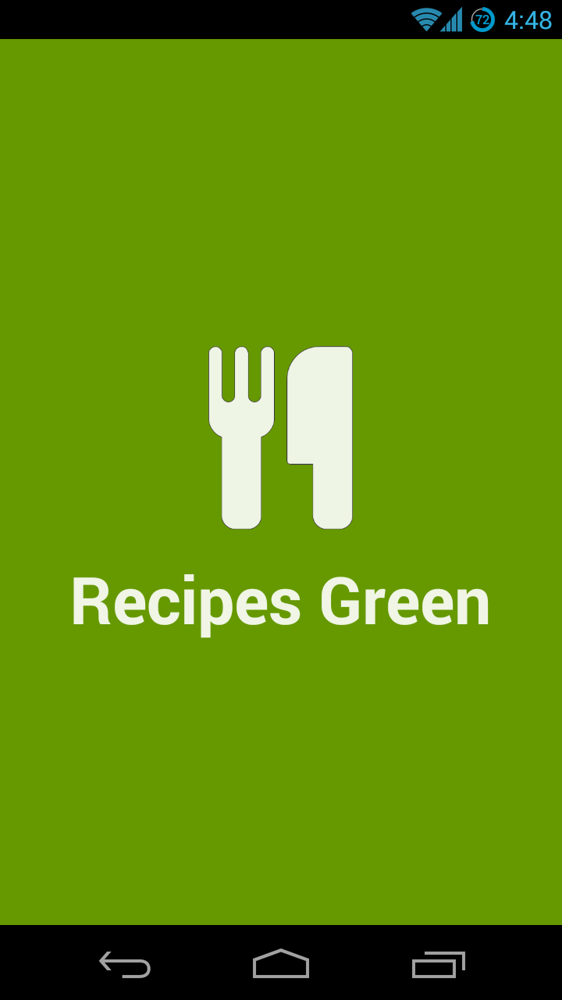 | 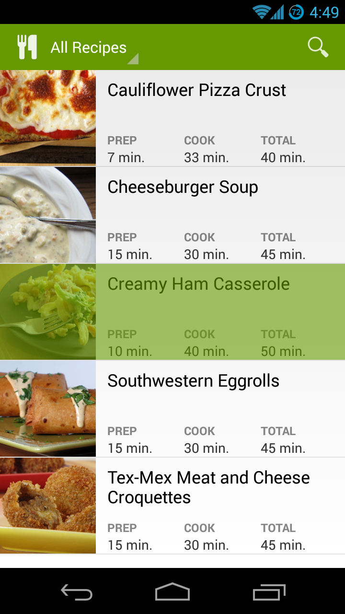 |
Blue theme
Project name: recipes-blue
| Splash | List |
|---|---|
| 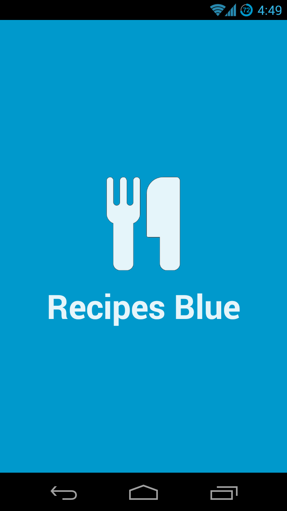 | 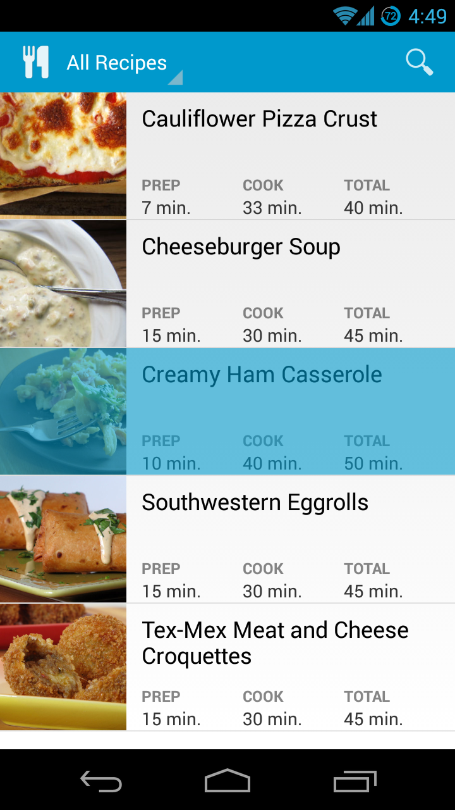 |
Purple theme
Project name: recipes-purple
| Splash | List |
|---|---|
| 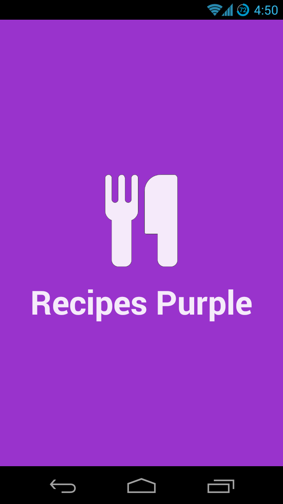 | 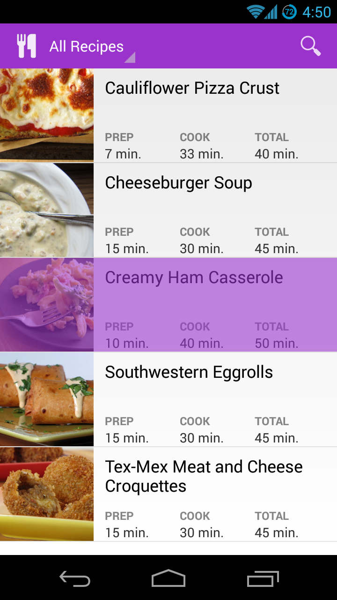 |
Orange theme
Project name: recipes-orange
| Splash | List |
|---|---|
| 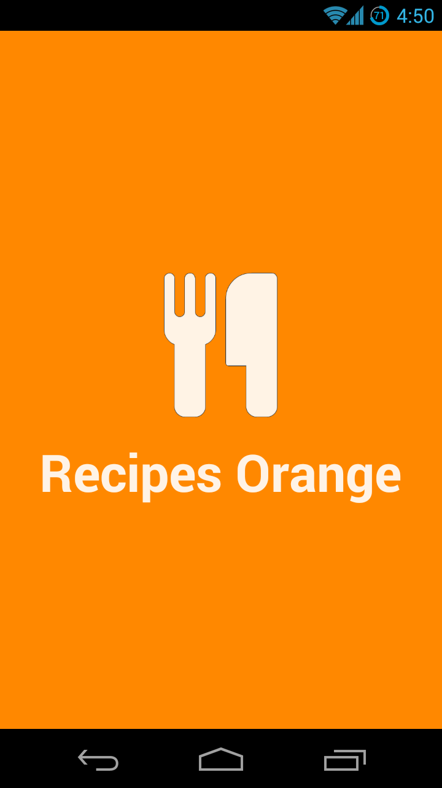 | 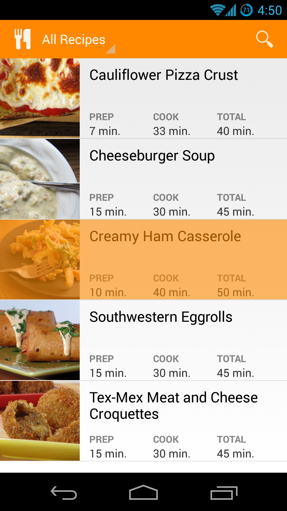 |
Add some data to the application
Recipes are loaded when application starts and imported inside a local database. While the application is running it displays data from the local database, so even without internet connection the recipes will be browsable.
Configuring source of recipes data
The configuration is located inside res/values/config.xml. If you want to load recipes from remote location you need to specify the full URL:
<!-- res/values/config.xml -->
<!-- when url is specified the recipes are loaded from that location -->
<string name="recipes_url">http://s3.amazonaws.com/masconsult-template-recipes/recipes.json</string>
When you don't need to load recipes from remote location, but rather ship with preloaded list, just clear the configuration and recipes will be loaded from local assets/recipes.json file.
<!-- res/values/config.xml -->
<!-- when no url is specified the recipes are loaded from assets/recipes.json file -->
<string name="recipes_url"></string>
Recipes data format
The recipes data uses JSON format. Bundled with each project is a sample file assets/recipes.json with populated data which can help you understand the structure.
{
"recipes": [
{
"id": "recipe1",
"category": "dinner",
"name": "Beef",
"image": "beef.jpg",
"summary": "Beef dinner",
"direction": "1. Take one beef\n 2. Slice\n 3. Spice\n 4. Cook\n 5. Serve with wine",
"prep_time": 7,
"cook_time": 45,
"total_time": 55,
"serves": 1,
"ingredients": [
"1kg of fresh beef meat",
"1 bottle of fine red wine"
]
}
]
}
Each recipe is surrounded by { and } (opening and closing curly brackets). Inside you have a series of name:value with the following meaning:
id: is an optional identificator for recipe, when ommited the combination of category and name is used to check for duplicating recipes. If you are using only local file, you can safely ignore this field.category: is the category of the recipe, you may enter whatever category you decide, just bear in mind that this is the name visible in the categories list inside the applicationname: is the name of recipe as seen in the applicationimage: the name of the image to use for this recipe. Images are located insideimagesdirectory and may be divided in subdirectories - in which case you need to enter the subdirectory name followed by/(forward slash)summary: a short summary presenting the result of the recipedirections: the full directions needed to follow the recipeprep_time: is the time in minutes needed to prepare the recipe.cook_time: is the time in minutes needed to cook the recipe.total_time: is the total time in minutes needed to cook the recipe. If this number is omitted butprep_timeand/orcook_timeis present it will be automatically calculated.serves: the number of serving for the given ingredients quantities.ingredients: is a comma-separated list (defined using square brackets[and]) of strings, each one surrounded by"(double quotes). E.g.:"ingredients": ["flour", "salt", "water"]
Warning: If you need to add a quote " inside the strings you need to escape it like this \"
Note: If you want to add new line in the summary or directions fields use \n. E.g.
[{ "summary": "Great appetizer.\nRecommended with spices" }]
To verify the file is syntactically correct you can copy/paste it to JSONLint
Recipes update
When using local assets/recipes.json file to load recipes, they are loaded only when the application is first run, or when application have been updated.
When using remote recipes url, every time the application is started the url is retrieved and recipes are loaded. To minimize the traffic, you can use the extended format for remote recipes and specify url that will only return new recipes.
Set up recipe indices
You can set up what indices to display in the recipes list and recipe detail screens. Supported indices are:
- Preparation time
- Cooking time
- Total time
- Servings
You can enable/disable each one of indices from res/values/config.xml.
Display preparation time
Controls whether to display preparation time for each recipe. If you do not support preparation time, disable by setting false.
| List | Recipe |
|---|---|
| 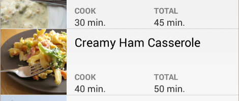 | 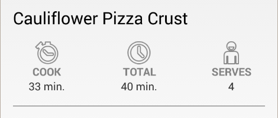 |
<!-- res/values/config.xml -->
<bool name="show_prep_time">true</bool>
Display cooking time
Controls whether to display cooking time for each recipe. If you do not support cooking time, disable by setting false.
| List | Recipe |
|---|---|
| 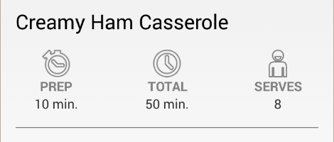 |
<!-- res/values/config.xml -->
<bool name="show_cook_time">true</bool>
Display total time
Controls whether to display total time for each recipe. If you do not supply total time in your data it is calculated by summing prep_time and cook_time.
If you do not want to display preparation time, disable by setting false.
| List | Recipe |
|---|---|
| 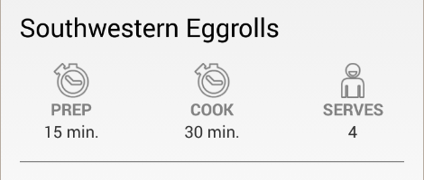 |
<!-- res/values/config.xml -->
<bool name="show_total_time">true</bool>
Display servings
Controls the display of servings. If you do not want to display serving, disable it by setting to false.
| List | Recipe |
|---|---|
| 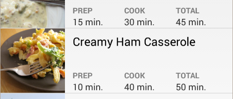 | 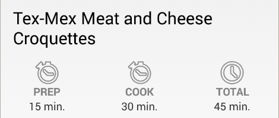 |
<!-- res/values/config.xml -->
<bool name="show_servings">true</bool>
Change Launcher icon
For best result you should have your icon designed in 512x512 pixels resolution. Then replace the following files:
res/drawable-mdpi/ic_launcher.pngwith 48x48 pxres/drawable-hdpi/ic_launcher.pngwith 72x72 pxres/drawable-xhdpi/ic_launcher.pngwith 96x96 pxres/drawable-xxhdpi/ic_launcher.pngwith 144x144 pxres/drawable-xxxhdpi/ic_launcher.pngwith 192x192 px
Note: You need the 512x512 px size for publishing to Google Play.
Change Splash screen icon
The splash screen uses by default themed background and larger version of the launcher icon centered in the middle. If you just want to change the icon you should replace the file
res/drawable-xxhdpi/logo.png with one about 300x300 pixels.
If you want to make more modifications the layout for splash screen is located at res/layout/activity_splash.xml.
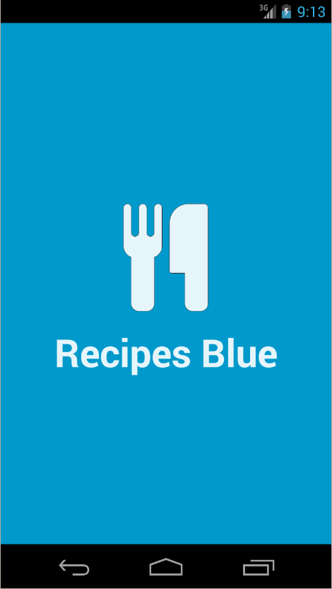
Change Application name
The application name is stored inside res/values/strings.xml as:
<!-- res/values/strings.xml -->
<string name="app_name">Recipes</string>
Just change to whatever your application will be called.
Set up system notifications
By default every day a notification will be presented featuring one recipe. When user clicks on the notification it will open the application on that recipe. The notifications don't include sound, vibrator or led indicator. You can modify the interval(in hours) or if you put zero the notifications will be disabled:
| Closed notification | Large notification |
|---|---|
| 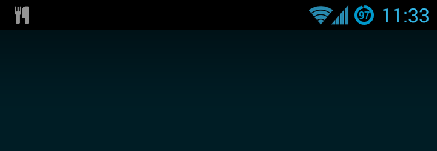 | 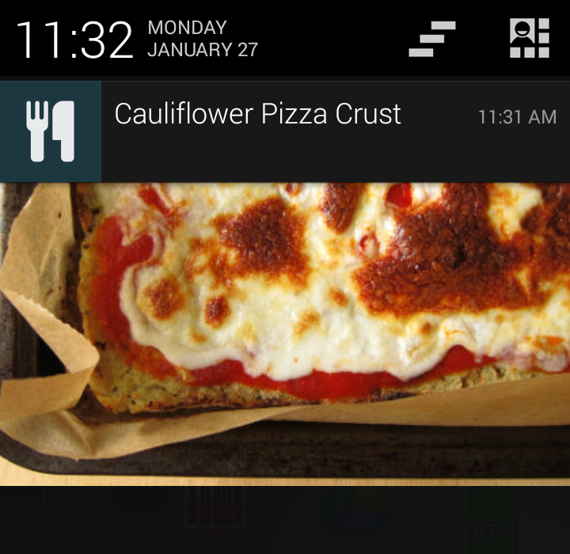 |
<!-- res/values/config.xml -->
<integer name="notifications_interval">22</integer>
Set up Ads
| With ads | Without ads |
|---|---|
| 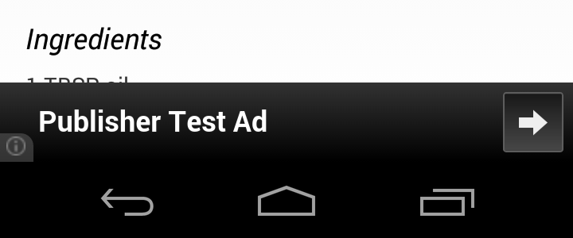 | 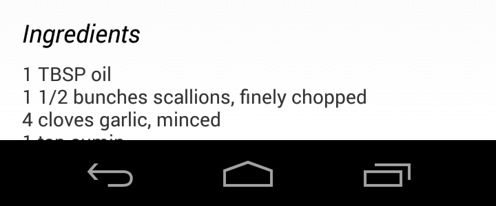 |
The template comes with integrated AdMob. To enable it you need to enter your AdMob unit id.
- Open
res/values/config.xml - Locate admob_unit_id
- Enter your AdMob unit ID
<!-- res/values/config.xml -->
<string name="admob_unit_id">{YOUR ADMOB UNIT ID GOES HERE}</string>
To find your AdMob unit ID, login to AdMob click the Monetize tab. Click All apps from the left-hand side and select an app. The ad unit ID is under the ad unit name.
For more information refer to AdMob Help.
If you leave the entry empty ads will not be displayed.
Set up Google Analytics
To enable Google Analytics you need to enter your Google Analytics tracking ID. If you want to disable analytcis just leave the entry empty.
- Open
res/values/config.xml - Locate ga_trackingId
- Enter your Google Analytics tracking ID
<!-- res/values/config.xml -->
<string name="ga_trackingId">{YOUR TRACKING ID GOES HERE}</string>
Translate in different language
All the texts used in the template are contained in a single file /res/values/strings.xml. To translate the template change all values in the file with appropriate translation.
Remote Recipes Optimization
Splitting data in smaller chunks
When retrieving recipes over network it is good practice to split large files in smaller chunks. This allows for partial display of data
as well as handle network connection change. To tell the application that you are serving only a part of the whole data, add a field next_page with
absolute URL where the next part is located. You can repeat this process as long as needed. Good rule of thumb is to split data in sizes of about 50-60kb,
which should translate in about 25 recipes.
{
"recipes": [{...}, {...}],
"next_page": "http://s3.amazonaws.com/masconsult-template-recipes/recipes-page2.json",
}
Note: the recipes array is ommitted for clarity!
Warning: you need to provide absolute url for next_page field.
Loading only new data
Having downloading all recipes every time the application starts may lead to excess data usage and unhappy users. To optimize the transfer of
only new data, add a field next_update with absolute URL which will be used the next time recipes are updated. Good rule of thumb is to include
the timestamp when the current update is happening, so you can return only data that is newer than this timestamp next time.
{
"recipes": [{...}, {...}],
"next_update": "http://s3.amazonaws.com/masconsult-template-recipes/recipes-update.json",
}
Note: the recipes array is ommitted for clarity!
Warning: you need to provide absolute url for next_update field.
Upgrading from previous version
Upgrading from 1.0
- Copy over the content of
recipes-<color>folder contained in the package you downloaded over your project, withoutassetsfolder andres/values/config.xml. Edit
config.xmland add to the bottom just before the final</resources>line:<!-- URL where the recipes are located. Application will load only remote recipes if URL is present or load recipes from local assets/recipes.json file if entry is empty --> <!-- uncomment to test with remote recipes <string name="recipes_url" translatable="false">http://s3.amazonaws.com/masconsult-template-recipes/recipes.json</string> --> <!-- when empty recipes are loaded from local assets/recipes.json file --> <string name="recipes_url" translatable="false"></string>Edit your
assets/recipes.jsonfile and add at the very beggining before the first[:{ "recipes":Edit your
assets/recipes.jsonfile and add at the very end after the final]:}Make sure your
assets/recipes.jsonfile looks like this:{ "recipes": [ { ... ommitted for clarity }, { ... ommitted for clarity } ] }Make sure everything works, by removing and installing the application on device or emulator.
Prepare for publishing
Before publishing the application to Google Play, make sure you have done:
- Changed the launcher icon in
res/drawable-*/ic_launcher.png - Changed the splash icon in
res/drawable-*/ic_launcher.png - Changed the application name in
res/values/strings.xml - Added recipes in
recipes.json - Changed the package name in
AndroidManifest.xml - Changed content provider authorities to match your package name in
res/values/config.xml
Changing package name
Every application in Google Play has an unique application name usually in the form com.example.app. Before you can publish your application you need to change the
application name to something unique (like use your domain as prefix in reverse order). To change it, you need to:
- Run ADT and open the project
- Right click on the project
- From the popup menu select
Android Tools->Rename Application Package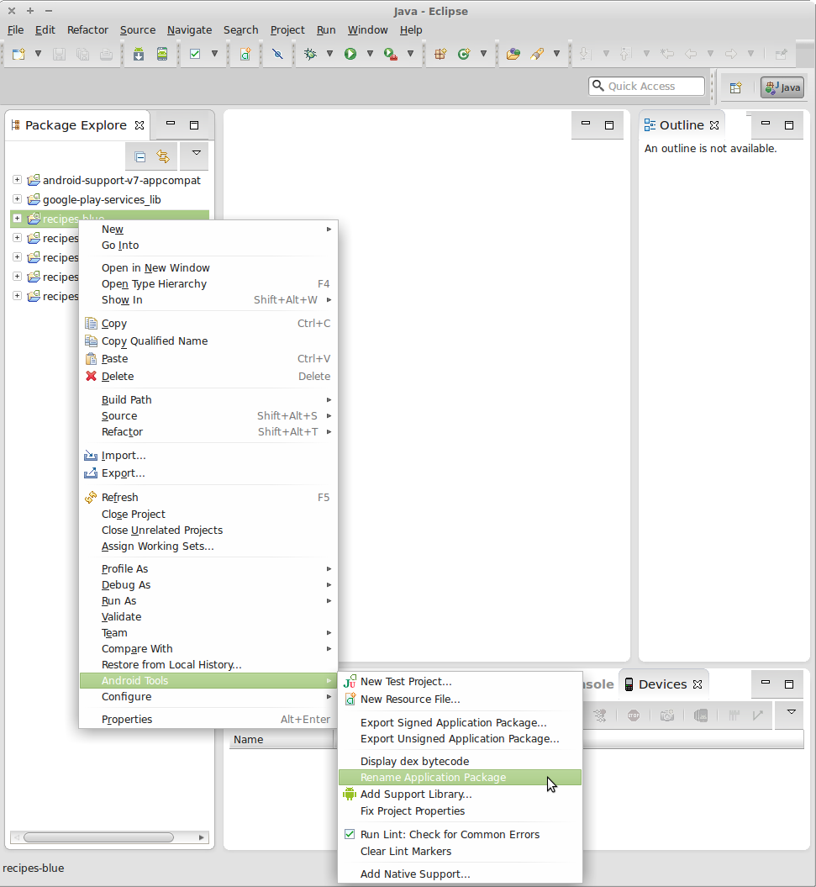 - Enter your new package name and press
OK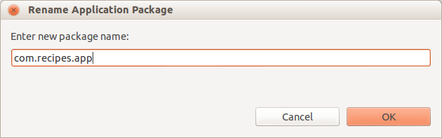 - Press
Finish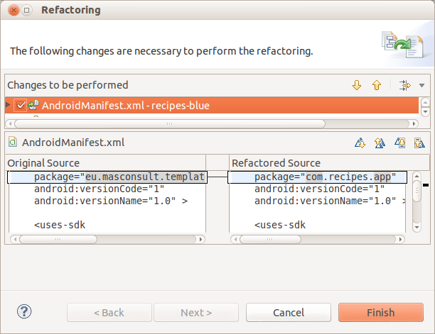
That's it.
Changing content provider authorities
In android, data are stored in a special container called ContentProvider. Each content provider needs to have an unique identifier, that is usually derived from the package name with some suffix. Before you publish your application you need to change these unique identifiers called authorities.
- Open the file
res/values/config.xml - Locate the lines for
search_suggestions_authorityandrecipes_content_authority:<string name="search_suggestions_authority">eu.masconsult.template.recipes.content.SearchRecipeSuggestionsProvider</string> <string name="recipes_content_authority">eu.masconsult.template.recipes.content.recipesdb</string> - Replace the text eu.masconsult.template.recipes with what you put as your package name.
- Save and run your application
- Try to browse and search for recipies to verify everything is working.
Misc
Rating & Suggestions
If you like our app, we will highly appreciate if you can provide us a rating of 5.
We would love to get suggestions from you. Tell us in comment section what other features you want to see with this app. We will try to add more features into it.
Credits
All images and recipes in the demo are for demonstrative purposes only and are not available for use by buyers.
Icons are generated from:
The following libraries are distributed and used:
- Mechanoid version 0.2.2: Apache 2 license
- Universal Image Loader for Android version 1.9.1: Apache 2 license
- CWAC MergeAdapter version 1.0.1: Apache 2 license
- CWAC SackOfViewsAdapter version 1.0.0: Apache 2 license
- Google Analytics Android SDK version 3.01: Copyright 2013 Google, Inc. All rights reserved.
- Google Play Services SDK revision 14: Copyright 2013 Google, Inc. All rights reserved.
- Android Support Library v7 appcompat revision 19.0.1: Apache 2 license
Once again, thank you so much for purchasing this theme. As I said at the beginning, I would be glad to help you if you have any questions relating to this theme. No guarantees, but I will do my best to help.